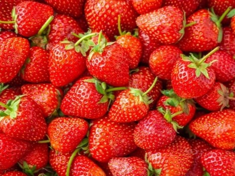
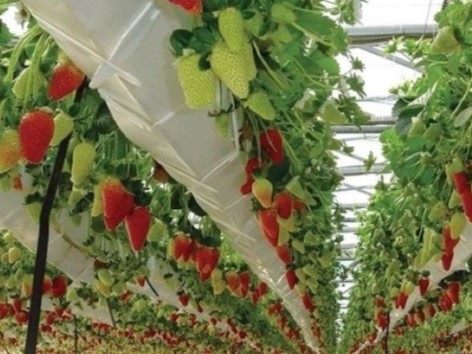

ARTIKEL
Mengintip Pertanian Stroberi Tanpa Tanah di Eropa : Bertani Hidroponik Modern
___
Teknik penanaman dengan metode hidroponik banyak digemari dalam beberapa waktu terakhir. Selain hemat tempat, menanam dengan sistem hidroponik bisa menghasilkan tanaman yang melimpah. Ada banyak tanaman sayuran dan buah-buahan yang bisa ditamam dengan hidroponik, salah satunya adalah strawberry atau kita kenal stroberi. Strawberry merupakan buah yang mengandung vitamin C sangat tinggi. Biasanya strawberry banyak tumbuh di daerah dataran tinggi.
Sebagian dari kalian Mungkin sudah akrab atau familiar dengan metode tanam hidroponik metode tanam hidroponik memiliki banyak keunggulan diantaranya adalah Hemat akan lahan ia tidak membutuhkan banyak air dan juga dapat meningkatkan produksi hingga empat kali lipat dari perkebunan biasa. kebun strawberry konvensional biasanya menanam 50.000 tanaman strawberry per hektar, namun dengan sistem hidroponik semacam ini petani dapat menanam hingga 200.000 tanaman per hektar. di dalam bertani secara hidroponik juga terdapat banyak perlakuan dan teknologi yang berbeda di setiap perusahaan pertanian untuk meningkatkan hasil panen namun tentu memiliki satu kesamaan yaitu bertani tanpa menggunakan media tanah dan sebagai gantinya menggunakan air yang mengalir.
Salah satu perusahaan yang menawarkan teknik bertani strawberry secara hidroponik adalah NGS atau perusahaan New Growing System yang berasal dari Eropa, tepatnya negara Spanyol, di kota Kohlberg, peralatan dan sistem hidroponik NGS sudah banyak diterapkan di banyak negara bagian Eropa sistem produksi ngs telah dirancang untuk budidaya berbagai jenis tanaman tanpa menggunakan subsistem yang memungkinkan manajemen irigasi sirkuit tertutup dengan mensirkulasikan kembali larutan nutrisi. dengan metode ini petani juga memungkinkan untuk meningkatkan kepadatan tanaman dengan memberikan ruang khas tanaman berkembang secara alami dengan teknologi polietilena berlapis untuk merangsang perkembangan akar.
Sistem ini juga memberikan solusi untuk memasok nutrisi dan mineral yang dibutuhkan untuk pertumbuhan dan perkembangan dengan desain rangka polytelin berlapis yang terbukti dapat mendorong pertumbuhan dan perkembangan akar. Dengan mengoptimalkan ruang yang tersedia dan mengoptimalkan penyerapan air dan nutrisi, design polytelin berlapis dalam media tanam ini didesain menyerupai aliran air terjun yang memberikan akses sempurna kepada akar untuk mendapatkan oksigenasi larutan nutrisi.
Sistem produksi polis memberikan kontrol penuh atas tanaman petani dapat merespon kebutuhan fisiologis tanaman serta permintaan pasar. Selain itu, sistem sirkuit air tertutup dapat mengoptimalkan penggunaan air yang biasanya terbuang pada sistem lain. Air akan ditampung pada reservoir dan disirkulasikan ulang sehingga dapat mengoptimalkan penggunaan air.
Desain atap rumah kaca ini juga dirancang untuk memiliki selokan di bagian atas bangunan, yang berguna untuk mengumpulkan semua air hujan atau embun dipagi hari yang kemudian mengirimkannya ke reservoir. Dengan curah hujan yang bagus lahan pertanian dapat menjadi 80% Mandiri dari suplai air dari luar. Dengan sistem ini pertanian hidroponik strawberry NGS dapat menjadi pertanian dengan 0% limbah. Teknologi pertanian NGS juga dapat diaplikasikan di kota terkering sekalipun. Penggunaan sistem sensor memungkinkan kontrol pengendalian iklim atau udara di dalam rumah kaca dapat dilakukan secara otomatis, sehingga dapat membuat hasil panen lebih meningkat bahkan dapat mengatur waktu panen. Kalian dapat melihat ketika sistem ini bekerja dimana ketika suhu naik di dalam rumah kaca ventilasi akan membuka membiarkan udara masuk ke rumah kaca sehingga dapat mendinginkan suhu di dalamnya.
Selain itu, media tanam akan berputar secara berkala memastikan setiap tanaman memperoleh perlakuan yang sama baik dari suhu dan intensitas cahaya matahari. Dengan sistem tertutup seperti ini, dapat memberikan kondisi kerja yang jauh lebih baik. Tanaman tidak terkena lingkungan dari luar, sehingga meminimalisir penyakit yang datang.
Dengan sistem ini, petani biasanya menanam strawberry pada awal musim semi dan berlanjut lebih lama di musim gugur. Pada akhirnya manfaat besar dari sistem ini adalah lingkungan ramah yang diciptakan rumah kaca ini dapat menekan hama dan penyakit, serta. dapat menarik banyak udara melalui terowongan dan ventilasi.
___
Demikian uraian singkat mengenai Mengintip Pertanian Stroberi Tanpa Tanah di Eropa : Bertani Hidroponik Modern. Untuk lebih jelasnya, kalian dapat menonton Video Pertanian Stroberi Tanpa Tanah di Eropa di bawah ini.
___